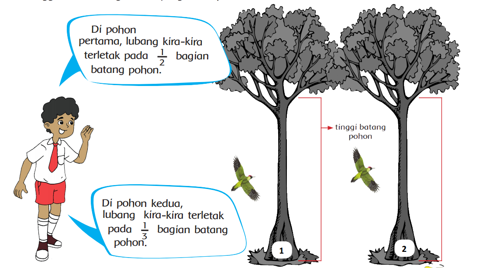
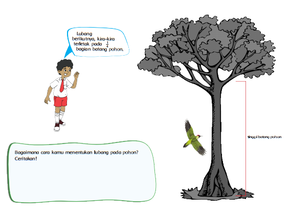

Pecahan
Setelah selesai mengamati hewan di taman, Edo menuju ke halaman belakang untuk
mengamati burung. Salah satu burung yang sering hinggap di pohon adalah burung
pelatuk. Burung ini mempunyai kebiasaan membuat lubang pada pohon tersebut ketika
lapar.
Dari pengamatan Edo, terdapat beberapa lubang pada pohon tersebut. Berikut adalah
informasi dari Edo tentang lubang-lubang yang terdapat pada pohon. Bantulah Edo
menggambar lubang sesuai yang disampaikan Edo.

